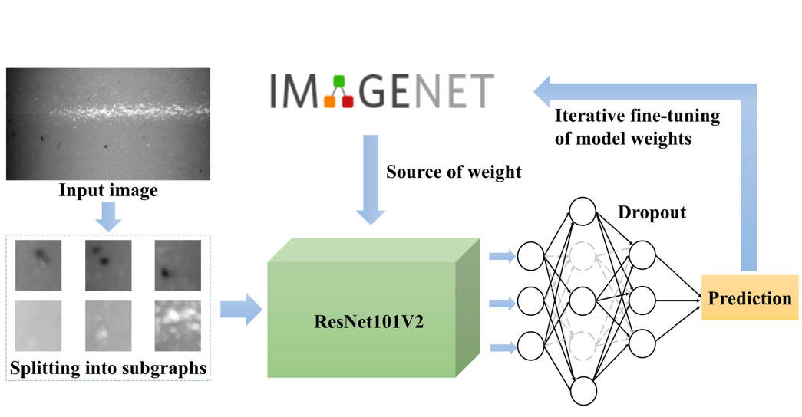
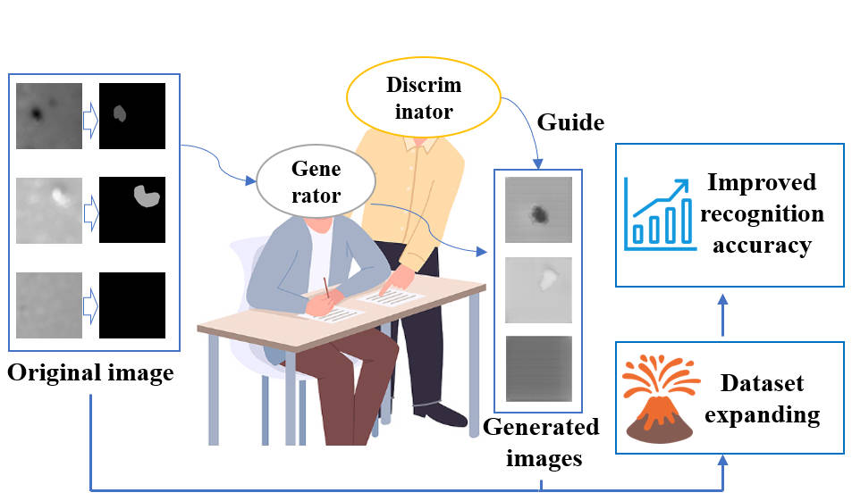
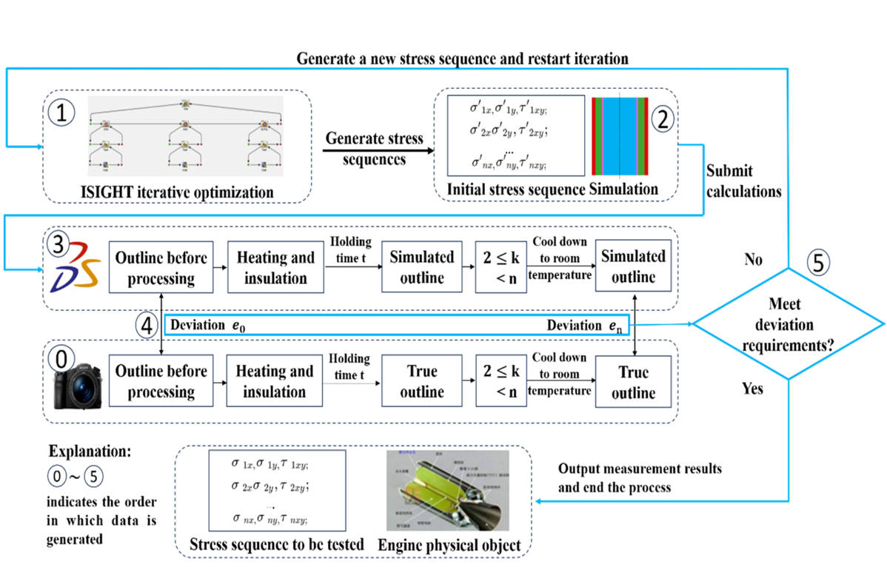
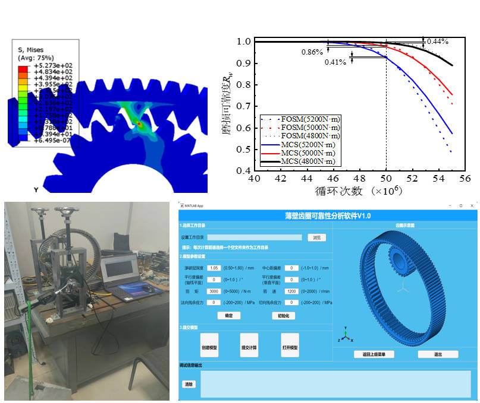
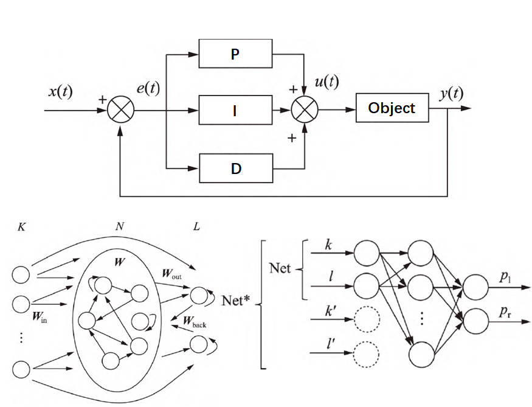
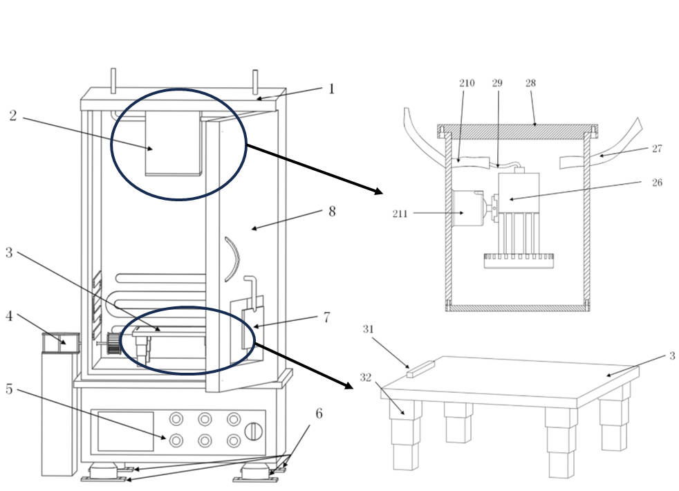
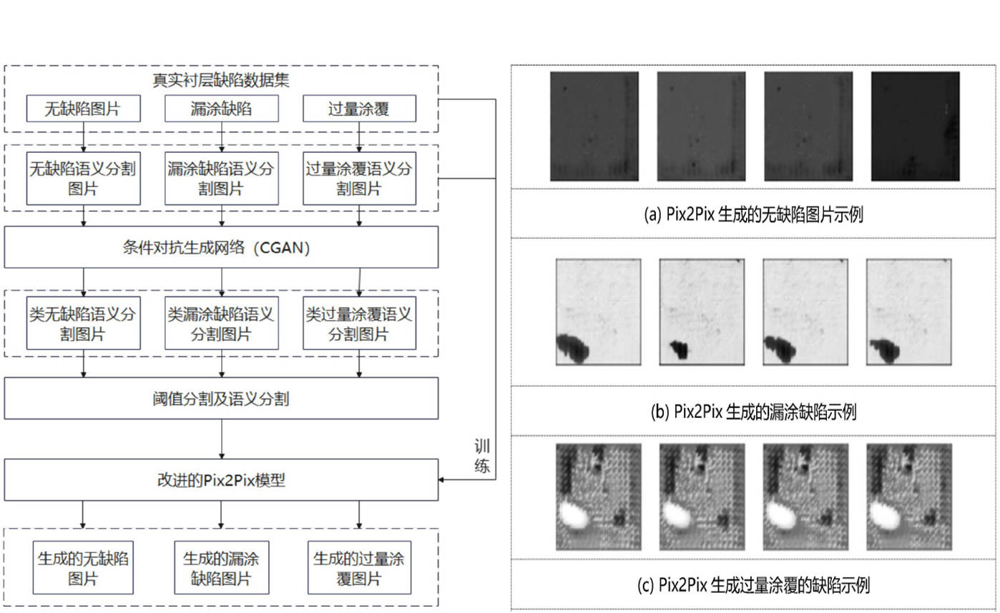

不久前，我从北京航空航天大学获得硕士学位。现前往上海交通大学机械与动力工程学院攻读博士学位。
目前，我的主要研究方向是基于机械工程背景的机器视觉，也许未来会和智能汽车发生奇妙的反应。若您在浏览我的主页后有任何想法，欢迎随时联系我。我非常愿意接收您的来信。当然，和我一起讨论生活和理想也是不错的选择。事实上，我非常渴望结识志同道合的朋友，一起干票大的！
🔥 新闻
- 2024.12: 🎉 我获得了北京航空航天大学的硕士学位
- 2024.05: 我正式开始使用并更新我的学术主页
- 2024.05: 🎉 确定将在上海交通大学攻读博士学位
- 2024.04: 🎉 论文被《International Journal of Heat and Mass Transfer》接收
- 2024.04: 🎉 论文被《Engineering Applications of Artificial Intelligence》接收
- 2023.12: 🎉 论文被《IEEE Sensors Journal》接收
📖 教育经历
- 2025.04 - 至今，博士，上海交通大学机械与动力工程学院，上海。
- 2022.09 - 2025.01，硕士，北京航空航天大学机械工程与自动化学院，北京。
- 2018.09 - 2022.06，本科，河北工业大学机械工程学院，天津。
📝 出版物
IEEE Sensors Journal (Q1)

基于机器视觉的胶粘剂涂层缺陷检测方法
陶鑫瑞, 高瀚君, 吴琼*, 等
- 提出了一种用于检测衬层喷涂后胶粘剂涂层缺陷的机器视觉检测方法
- 有效解决了高宽比和光照不稳定条件下涂层完整性的检测难题
- 在硬件系统设计中充分考虑了检测设备的偏转补偿问题
EAAI (Q1, Top)

基于增强图像翻译的复合材料涂层缺陷图像数据集扩展方法
陶鑫瑞, 高瀚君*, 杨凯, 吴琼
- 提出名为E-Pix2Pix的方法用于增强固体火箭发动机复合材料涂层缺陷图像数据集
- 深入研究了图像生成过程中参数对生成效果的影响
- 探讨了生成图像内容对分类模型的潜在负面影响
Int. J. Heat Mass Transfer (Q1, Top)

复合推进剂与橡胶衬层固化过程中界面残余应力的形成机制与演化
高瀚君, 陶鑫瑞, 袁昊, 等
- 建立了模拟整个固化过程应力变化的有限元模型
- 设计了基于视觉的形变监测装置用于固化过程
- 结合检测形变与仿真结果优化关键参数，实现精确应力评估
ICEEIE 2023

基于ABAQUS的渗碳层厚度与装配误差对薄壁齿圈系统可靠性影响分析
陶鑫瑞, 郭静, 林明辉, 等
- 采用参数化建模技术建立齿圈系统三维模型
- 对齿轮装配过程中可能出现的各种装配误差进行有限元分析
- 评估不同渗碳层厚度下齿圈的性能表现
- 开发基于Abaqus二次开发的参数化仿真软件
液压与气动

气动机械臂平稳运动控制策略综述
陶鑫瑞, 高春艳*, 陈璇, 等
- 从模糊控制、神经网络控制和鲁棒控制三个方向进行综述
- 模糊控制和神经网络控制发展迅速且与其他控制理论融合良好，鲁棒控制发展较慢
- 预测气动机械臂控制策略将继续向控制理论融合补充方向发展
发明专利

专利名称：一种基于机器视觉的复杂构件蠕变变形检测装置
发明人：高瀚君, 陶鑫瑞, 闫坤, 等
- 公开号：CN117890205A
- 本发明可在保证热处理效果的同时，对复杂构件的蠕变变形进行全过程监测，为探索复杂构件蠕变演化规律提供可靠数据
发明专利

专利名称：基于改进Pix2Pix的复合材料涂层缺陷数据集扩展方法
发明人：高瀚君, 陶鑫瑞, 吴琼, 等
- 公开号：CN117079752A
- 引入注意力机制改进生成器性能，通过生成器与判别器的对抗控制设计，解决缺陷识别任务中样本量小且不均衡的问题
🎖 荣誉与奖项
- 2024.12 北京市优秀毕业生
- 2024.11 北航沈元奖章提名奖
- 2024.10 硕士国家奖学金
- 2024.09 北京航空航天大学一等学业奖学金
- 2023.09 北京航空航天大学一等学业奖学金
- 2022.09 北京航空航天大学一等学业奖学金
- 2022.06 河北省优秀本科毕业生
- 2022.06 河北工业大学优秀毕业生
- 2022.04 北京精雕科技企业奖学金
- 2021.10 第八届中国TRIZ杯大学生创新方法大赛（全国三等奖）